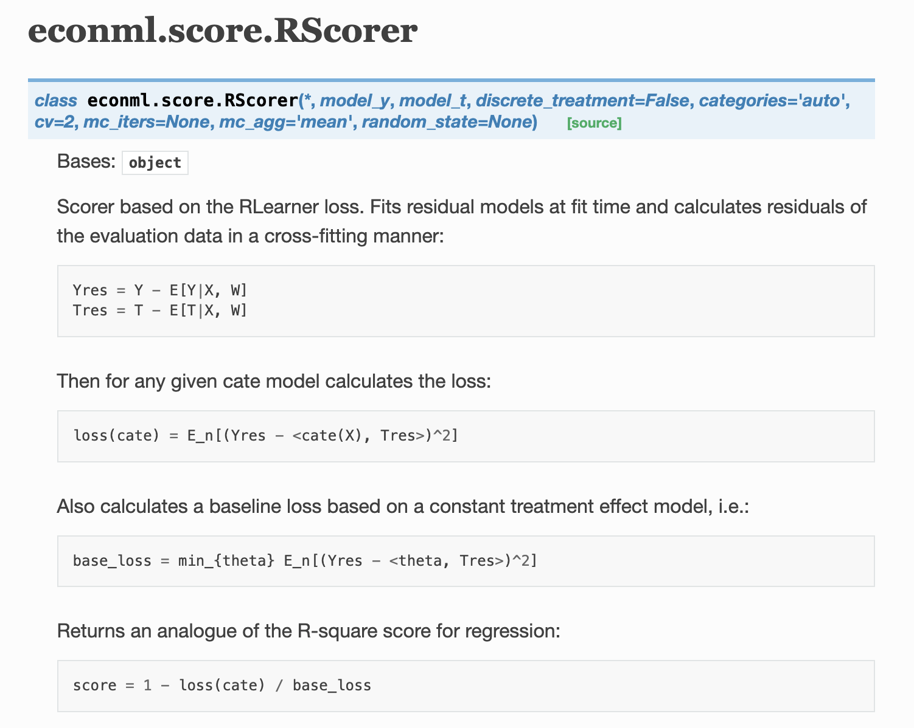

Double Machine Learning
R learner
Notation and definition
Data
(X_i, Y_i, W_i) (i = 1, \dots, n)
- X_i: features for i (e.g., education, age, etc)
- Y_i \in \mathbb{R}: obserbved outcome for i (e.g., income)
- W_i \in \{0, 1\}: treatment assignment for i (e.g., vocational training program)
Potential outcomes
- Y_i(0): potential outcomes under control (W_i = 0)
- Y_i(1): potential outcomes under treatment (W_i = 1)
We get to observe only one of them.
Superscript ^* is used to denote unknown population quantities.
- e^*(x) = prob(W = 1 | X= x): treatment propensity (the probability of getting treated given features x)
- \mu_{(w)}^*(x) = E[Y(w) |X = x] for w \in {0, 1}: conditional response surface (outcome for the given value of W and X)
Conditional average treatment effect (CATE)
We seek to estimate the effects of the treatment that differ based individual features (X_i), termed conditional average treatment effect (CATE).
CATE is denoted by \tau^*(x):
\tau^*(x) = E[Y(1) - Y(0)|X=x]
Verbally put, it is the expected difference between the income under treatment and control given (conditional on) the specific features X = x.
Example
The impact of a vocational training program on income that differs by the level of education at the time of receving the vocational training (conditional on education level). The impact of the program may well vary based on the level of education of the individuals.
Assumption 1: The treatment assignment W_i is unconfounded, i.e., \{Y_i(0), Y_i(1)\perp W_i|X_i\} (Given the features X_i, the treatment status and potential outcomes are not correlated.)
Under assumption 1 (unconfoundedness),
E[\varepsilon(W_i)|X_i, W_i] = 0, where \varepsilon(W_i) = Y_i(w) - {\mu_{(0)}^*(X_i)} + w\tau^*(X_i)
- Y_i(0) = {\mu_{(0)}^*(X_i)} + 0\cdot \tau^*(X_i) = \{\mu_{(0)}^*(X_i)\}
- Y_i(1) = {\mu_{(0)}^*(X_i)} + 1\cdot \tau^*(X_i) = \{\mu_{(0)}^*(X_i) + \tau^*(X_i)\}
{\mu_{(0)}^*(X_i)}: expected outcome given X_i if not treated
Y_i(1) is the sum of expected outcome given X_i if not treated and treatment effect given X_i (\tau^*(X_i)).
Conditional mean outcome (averaged across both treated and untreated) is
m^*(x) = E[Y|X=x] = \mu_{(0)}^*(X_i) + e^*(x) \cdot \tau^*(X_i)
Then,
Y_i - m^*(X_i) = [W_i - e^*(X_i))]\cdot \tau^*(X_i) + \varepsilon(W_i)
This is termed Robinson transformation.
According to Robins (2004), the above equation is equivalent to
\tau^*(\cdot) = argmin_{\tau}\large\{\normalsize E\large(\normalsize[\{Y_i-m^*(X_i)\}-{W_i - e^*(X_i)}\tau(X_i)]^2\large)\large\}
So, if we were to know m^*(X_i) and e^*(X_i) for some reason, we can estimate \tau^*(X_i) by solving the following empirical loss minimization problem:
\tilde{\tau}(\cdot)= argmin_{\tau}\large\{\normalsize \frac{1}{n}\sum_{i=1}^{n}\normalsize[\{Y_i-m^*(X_i)\}-\{W_i - e^*(X_i)\}\tau(X_i)]^2+\Lambda_n\{\tau(\cdot)\}\large\}
where \Lambda_n{\tau(\cdot)} is interpreted as a regularizer on the complexity of the \tau(\cdot) function.
Of course the problem is that we do not know m^*(X_i) and e^*(X_i), so the above solution is not feasible.
R-learner
Cross-fitting
Step 1: Divide up the data into Q evenly sized folds, where Q is typically set to 5 or 10. Let q(\cdot) be a mapping from the sample indices i = 1,\dots, n to the Q evenly sized data folds, and fit m^() and e^() with cross-fitting over the Q folds using methods tuned for optimal predictive accuracy.
Note: q(i) will let you know which group (fold) observation i belongs to after dividing up the data (e.g., q(2) = 2 means that the second observation belongs to the second fold.)
Step 2: Estimate treatment effects via a plug-in version of (3), where the e^{−q(i)}(X_i) and m^{−q(i)}(X_i) denote predictions made without using the data fold that the ith training example belongs to:
For fold 1 (observations that satisfy q(i = 1)), use data from folds 2 through 5,
Step 1: train a model that predicts Y using X (note that W is not part of the regression) using any method (e.g., OLS, or any machine learning methods) using the data from folds 2 through 5 (fold 1 not included)
Step 2: using the trained model in Step 1, predict m^(X_i) for all the observations in fold 1 (cross-fitting).
Step 3: train a classification model that predicts W using X using any method (e.g., probit, logit, or any machine learning classification methods) using the data from folds 2 through 5 (fold 1 not included)
Step 4: using the trained model in Step 3, predict e^(X_i) for all the observations in fold 1 (cross-fitting).
Step 5: repeat Steps 1 through 4 for all the folds and obtain the estimates of m^(X_i) and e^(X_i) for all the observations
Step 6: solve the following using a statistical method of your choice (e.g., random forest, extreme gradient boosting, LASSO, etc)
\hat{\tau}(\cdot) = argmin_{\tau}\large[\normalsize \hat{L_n}\{\tau(\cdot)\} + \Lambda_n\{\tau(\cdot)\}\large], where
\hat{L_n}\{\tau(\cdot)\} = \frac{1}{n}\sum_{i=1}^{n}\normalsize[\{Y_i-\hat{m}^{\{-q(i)\}}(X_i)\}-\{W_i - \hat{e}^{\{-q(i)\}}(X_i)\}\tau(X_i)]^2
- \hat{m}^{\{-q(i)\}}(X_i) is the estimated outcome (Y) condittional on X for observation i (this is an actual number)
- \hat{e}^{\{-q(i)\}}(X_i) is the estimated treatment propensity (e) condittional on X for observation i (this is an actual number)
\hat{L_n}\{\tau(\cdot)\} is called R-loss.
econml R scorer

- Yres = Y - E[Y|X, W] refers to Y_i-\hat{m}^{\{-q(i)\}}(X_i)
- Tres = T - E[T|X, W] refers to W_i - \hat{e}^{\{-q(i)\}}(X_i)
- loss(cate) = E_n[(Yres - <cate(X), Tres>)^2] refers to \frac{1}{n}\sum_{i=1}^{n}\normalsize[\{Y_i-\hat{m}^{\{-q(i)\}}(X_i)\}-\{W_i - \hat{e}^{\{-q(i)\}}(X_i)\}\tau(X_i)]^2